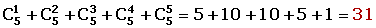

Permutations Word Problems
1Find the total possible amount of eight-digit palindromics. Also, how many nine-digit palindromics are there? (Palindromic: a number whose digits read the same backwards and forwards.)
2Four different math, six different physics and two different chemistry textbooks are placed on a shelf. What is the number of possible combinations of arranging the textbooks if:
1. The textbooks from each subject must be grouped together.
2.Only the math textbooks need to be grouped together.
3A boy has five coins, each of a different value. How many different sums of money can be totalled with these five coins?
45 red, 2 white and 3 blue balls are arranged in a row. If the balls of like color are not distinguished from each other, how many possible ways can they be ordered?
5With the dot and dash system of Morse code, how many different signals can be sent using four clicks or less?
6Eight people are seated at a dinner table at a political function. How many ways can they sit if the president and secretary always have to be seated next to one another?
7How many diagonals does a pentagon have and how many triangles can be formed with its vertices?
8A group composed of five men and seven women form a committee of 2 men and 3 women. How many different combinations can there be if:
1. The group can be formed by 5 people of any sex.
2. A particular woman has to belong to the committee.
3. Two particular men cannot be on the committee.
1
Find the total possible amount of eight-digit palindromics. Also, how many nine-digit palindromics are there? (Palindromic: a number whose digits read the same backwards and forwards.)
2
Four different math, six different physics and two different chemistry textbooks are placed on a shelf. What is the number of possible combinations of arranging the textbooks if:
1. The textbooks from each subject must be grouped together.

2.Only the math textbooks need to be grouped together.
3
A boy has five coins, each of a different value. How many different sums of money can be totalled with these five coins?

4
5 red, 2 white and 3 blue balls are arranged in a row. If the balls of like color are not distinguished from each other, how many possible ways can they be ordered?
5
With the dot and dash system of Morse code, how many different signals can be sent using four clicks or less?
The order of the elements does matter.
The elements can be repeated.
6
Eight people are seated at a dinner table at a political function. How many ways can they sit if the president and secretary always have to be seated next to one another?
There are two groups that the elements can be divided into for solving this problem. The first has two people (president and secretary) and the second has 7 people.
The order of the elements does matter.
The elements cannot be repeated.
7
How many diagonals does a pentagon have and how many triangles can be formed with its vertices?
First, the lines that can be drawn between 2 vertices need to be determined.
The order of the elements does not matter.
The elements cannot be repeated.
The sides that determine 5 straight lines that are not diagonal need to be subtracted.
8
A group composed of five men and seven women form a committee of 2 men and 3 women. How many different combinations can there be if:
1. The group can be formed by 5 people of any sex.
2. A particular woman has to belong to the committee.
3. Two particular men cannot be on the committee.